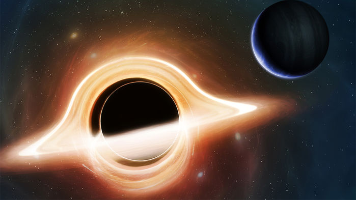
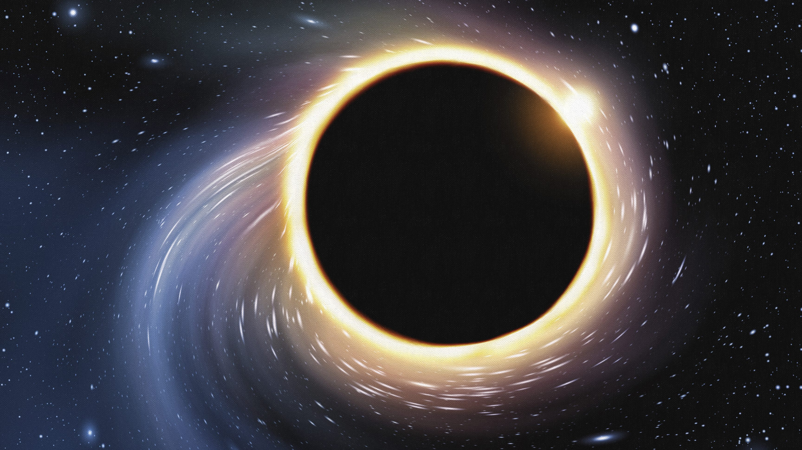
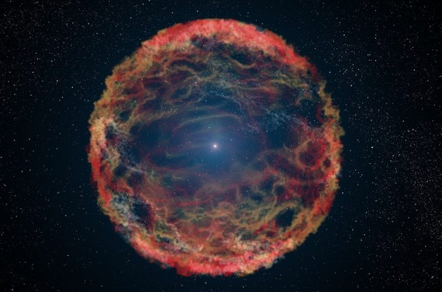

Üdvözlet a weboldalon!
A fekete lyukakról
A fekete lyuk a téridő olyan tartománya, ahonnan az erős gravitáció miatt semmi, még a fény sem tud távozni. A fekete lyuk továbbá olyan érdekes, hogy nincs belső szerkezete, hiába látjuk egy fekete "gömbnek". Ezeknek a testeknek csak tömegük és töltésük van.
Létezésüket az általános relativitáselmélet jósolta meg. Fekete lyuk keletkezik akkor, ha egy véges tömeg (egy csillag) a gravitációs összeomlásnak nevezett folyamat során egy kritikus értéknél kisebb térfogatba tömörül össze. Ekkor az anyag összehúzódását okozó gravitációs erő minden más anyagi erőnél nagyobb lesz, s az anyag egyetlen pontba húzódik össze. Ebben a pontban az általános relativitáselmélet szerint bizonyos fizikai mennyiségek (sűrűség, téridőgörbület) végtelenné válnak (lásd: gravitációs szingularitás). A szingularitást körülvevő térrészben a gravitáció olyan erős, hogy onnan sem anyag, sem fény nem szabadulhat ki.
A fekete lyukak létezése mind elméletileg, mind csillagászati megfigyelésekkel jól alátámasztott. A lyuk elnevezés alatt nem a szokásos értelemben vett lyukat kell érteni, inkább a világűr egy részét, ami mindent elnyel, és ahonnan semmi nem tud visszatérni.

Története
John Michell (1724-1793) Newton gravitációs elméletét alkalmazva rámutatott 1783-ban, hogy egy elegendően nagy tömegű és kis méretű csillagnak olyan erős lenne a gravitációs tere, hogy a felszínéről semmi sem tudna elszakadni. A fény korpuszkuláris elméletét és Newton gravitációs elméletét felhasználva kiszámította, hogy a Nap sűrűségét feltételezve ennek a csillagnak a sugara 486-szorosa lenne a Napénak, a tömege pedig annak 120 milliószorosa. Ez volt az első említése egy olyan típusú csillagnak, aminek jóval később a „fekete lyuk” nevet adták.
Karl Schwarzschild német csillagász 1916-ban, miközben a német hadseregben az első világháborúban az orosz fronton harcolt, levezette az Einstein féle általános relativitáselmélet egy megoldását (lásd. Schwarzschild-metrika). Schwarzschild már 1900-ban (amikor 27 éves volt) benyújtott a német csillagászati társaság felé egy tanulmányt, amiben azt fejtegette, hogy a tér nem közönséges háromdimenziós dobozként viselkedik, hanem a gravitáció által furcsa módon „görbül”. Einstein hasonló megfogalmazást használt 1905-ben.
Schwarzschild azt állapította meg tisztán matematikai úton, hogy ha egy csillag a saját gravitációja által egyre összébb húzódik, akkor a szökési sebesség egyre nagyobb lesz, míg eléri a fény sebességét, vagyis az ilyen objektum közeléből a fény sem tud távozni. Az „eseményhorizont” fogalmát is Schwarzschild írta le, 1916-ban. Ő maga nem hitt abban, hogy mindez fizikailag is létezhet.
A gömbszimmetrikus Schwarzschild-megoldás asztrofizikailag relevánsabb, forgásszimmetrikus általánosítását 1963-ban fedezte fel Roy P. Kerr.

A fekete lyukak fizikai tulajdonságai
Nagy tömegű csillagok egyik lehetséges végállapotaként, szupernóva-robbanás után a csillagmaradvány tömegétől függően vagy fekete lyuk, vagy neutroncsillag keletkezhet. A fekete lyuk keletkezéséhez elég nagy tömegű csillag szükséges, hogy még a belőle keletkezett neutroncsillag is összeroppanjon. Ez a tömeg jelenlegi ismereteink szerint valahol 1,7-2,7 naptömeg között van, a legkisebb ismert tömegű fekete lyuk 3,8 (±0,5) naptömegű.
Ha viszont a csillag tömege túl nagy (20-40 naptömeg feletti), akkor még a szupernóva-robbanás előtt a csillagszéllel annyi anyagot veszít, hogy a maradék tömege nem elég a fekete lyuk létrejöttéhez, így nagyon gyorsan forgó és nagyon erős mágneses térrel rendelkező neutroncsillagok, magnetárok jönnek létre.
Tudj meg többet:Anyagok

Nagy tömegű fekete lyukak listája
Az eddig ismert legnagyobb és nagy méretű fekete lyukak nevei és tömegei:
| TON 618 | 60 milliárd |
| NGC 4889 | 21 milliárd |
| Messier 87 | 6 milliárd 300 millió |
| Messier 60 | 4 milliárd 500 millió |
| Hercules A | 4 milliárd |
| Centaurus A | 55 millió |
| Sagittarius A | 4 millió 100 ezer |
Tudj meg többet:Teljes táblázat